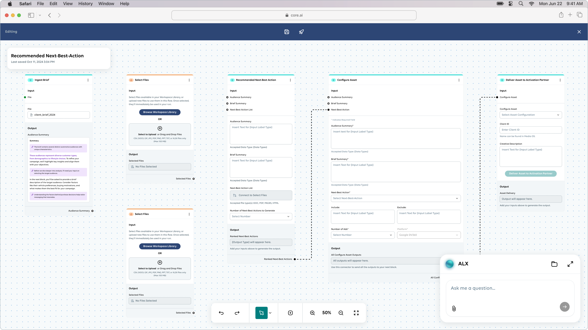

Scope & Collaboration
Project
Cross-functional Team
Context
Marketing at enterprise scale was still manual.
CoreAI is Publicis Groupe's enterprise AI platform — designed to automate complex marketing workflows spanning content intelligence, media optimization, and audience strategy. The platform supports modular, configurable architectures where teams build task-based flows or select from intelligent templates across strategy, data, and creative domains.
The first major deployment: a Next Best Action engine for Stellantis, one of the world's largest automotive groups, built to replace fragmented campaign planning with AI-driven precision.

CoreAI — enterprise AI platform for intelligent marketing automation
The Opportunity
Fragmented workflows created a system-level bottleneck.
Stellantis' marketing teams operated across global silos. Campaign briefs lived in disconnected documents. Audience segmentation was manual and time-intensive. Creative assets couldn't be matched to the right segments or funnel stages with any consistency.
The result: slow campaign cycles, inconsistent messaging across markets, and significant wasted media spend. Every campaign required the same labor-intensive setup — parsing briefs, mapping audiences, matching creative — with no system to learn from prior work.
This fragmentation was a design problem, not just an operational one. The opportunity: build a single intelligent workflow that ingests campaign materials, maps audiences automatically, and surfaces data-driven recommendations — eliminating the manual loop entirely.
Before-state workflow: disconnected briefs, manual segmentation, spreadsheet-based planning
Experience Architecture
A modular system designed to scale across verticals.
The CoreAI MVP architecture was built around a task-based modular framework. Every workflow is assembled from reusable nodes — data inputs, AI processing steps, and intelligent output components — that can be configured for any business vertical.
A Build vs. Play toggle separates configuration from execution. In Build mode, strategists assemble and customize workflows. In Play mode, teams run those workflows against live data and receive actionable outputs.
How the system works
Campaign materials — briefs, segment lists, creative assets — feed into the platform. AI-powered nodes parse document contents, map audience segments using Epsilon first-party data, identify funnel positions through intent signals, and generate targeted recommendations. Each node is independently configurable and reusable across clients.
The same architecture that powers Stellantis' Next Best Action engine now supports use cases across pharma, travel, and CPG — without rebuilding the underlying system.
Modular system architecture — task nodes, workflow builder, Build vs. Play toggle
CoreAI modular architecture — reusable task nodes assembled per vertical
Product Design Decisions
Complex AI distilled into clear, actionable interfaces.
01 — Brief Analyzer
Automated document parsing
Campaign briefs — PDFs, PowerPoints, copy decks — are uploaded and automatically parsed into structured campaign insights. The system extracts business goals, audience segments, and message themes without manual interpretation. What previously required hours of analyst review now happens in seconds.
Brief Analyzer interface — document upload, parsed insights, structured output
02 — Funnel Mapper
Audience segmentation by intent
Audience segments are automatically grouped and placed by funnel stage using Epsilon first-party data and behavioral intent signals. The visual funnel interface shows where each audience sits in the buyer journey — awareness, consideration, decision — enabling precision targeting without manual spreadsheet analysis.
Funnel Mapper — audience segments positioned by journey stage
03 — Creative Matcher
Message-to-audience alignment
The Creative Matcher surfaces top-performing copy and image combinations for each audience group. Rather than relying on campaign teams to manually align messaging to segments, the system recommends creative variants optimized for each audience type and funnel position — improving message effectiveness and reducing creative waste.
04 — NBA Output Builder
From analysis to activation in one step
The NBA Output Builder assembles recommended action kits — suggested copy, CTA, audience segment, and channel placement — into ready-to-deploy packages. Outputs can be pushed directly to Epsilon PeopleCloud for activation or exported in shareable formats for team review. The gap between insight and action collapses to a single interface.
NBA Output Builder — action kits with copy, CTA, audience, channel recommendations
Spotlight Feature
The Brief-to-NBA pipeline: five steps from upload to activation.
The core innovation of the Stellantis deployment is a single, continuous pipeline that transforms a raw campaign brief into targeted, ready-to-activate recommendations. Each step in the pipeline is handled by a dedicated AI node — but the user experiences it as one seamless flow.
This pipeline demonstrates the platform's core design principle: complex AI logic, presented through clear, human-readable interfaces where strategists remain in control. Every AI-generated output can be reviewed, edited, and refined before activation — a human-in-the-loop approach that builds trust while preserving speed.
Pipeline Steps
1. Brief Upload — AI parses business goals, segment notes, and message themes from uploaded documents.
2. Audience Mapping — Segments grouped and positioned by funnel stage using Epsilon + first-party data.
3. Creative Matching — Messaging and creative variants recommended per audience type.
4. NBA Generation — Clear action suggestions: copy, image guidance, audience, channel.
5. Export & Activate — Outputs pushed to activation platforms or packaged for team distribution.
End-to-end pipeline — annotated screens for each of the 5 steps
Brief-to-NBA pipeline — upload, map, match, generate, activate
The Final Experience
One platform. Every campaign workflow.
The finished platform delivers a complete campaign intelligence workflow — from raw brief upload to activated audience packages — within a single modular interface. Configuration and execution are cleanly separated through the Build/Play toggle, allowing strategists to customize workflows without engineering support.
The same modular foundation now supports predictive analytics, briefing systems, and content intelligence tools across Publicis clients — each assembled from the shared task-based infrastructure.
Build mode — workflow configuration interface
Play mode — live workflow execution with AI outputs
Build vs. Play — configuration and execution in one platform
Complete platform view — modular components, insights panels, output cards
CoreAI platform — modular design system supporting multiple verticals
Outcomes & Reflection
Modular AI infrastructure compounds across every deployment.
faster campaign planning
Automated brief parsing and audience mapping eliminated manual workflows that previously consumed days of analyst time.
media savings potential
Precision audience-to-creative matching reduced wasted media spend by aligning every campaign asset to verified behavioral signals.
reusable blueprint
The Stellantis workflow became the foundation for deployments across pharma, travel, and CPG — each built on the same modular infrastructure.
Enterprise AI doesn't succeed by being powerful. It succeeds by being usable. The systems that scale are the ones where complex intelligence is distilled into clear, actionable interfaces — where humans stay in control and AI handles the repetition.
The infrastructure built for Stellantis now powers use cases across Publicis clients — predictive analytics, modular briefing, content intelligence — all reusing the same task-based architecture. Good systems design compounds.